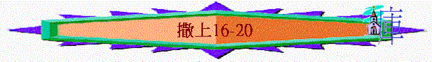

|
成 敗 與 興 衰 |
||
|
事
奉 |
民
族 |
君
王 |
|
撒上1-3 |
撒上4-7 |
撒上8-撒下24 |
丙.君王的興衰(撒上8-撒下24)
二.大衛的興衰(撒上16-撒下24)
〜神厭棄掃羅後，祂親自揀選了大衛成為合祂心意的王，究竟大衛如何興起？他為何合神心意？
Ⅰ.大衛興起的時期----人的輕看與神的揀選(撒上16-18:5)
a.神的揀選----被人膏立
(1)預定的計劃
「耶和華對撒母耳說：「我既厭棄掃羅作以色列的王，你為他悲傷要到幾時呢？你將膏油盛滿了角，我差遣你往伯利恆人耶西那裡去；因為我在他眾子之內，預定一個作王的。」撒母耳說：「我怎能去呢？掃羅若聽見，必要殺我。」耶和華說：「你可以帶一隻牛犢去，就說：『我來是要向耶和華獻祭。』」16:1-2
「猶大啊，你弟兄們必讚美你；你手必掐住仇敵的頸項；你父親的兒子們必向你下拜。猶大是個小獅子；我兒啊，你抓了食便上去。你屈下身去，臥如公獅，蹲如母獅，誰敢惹你？」創49:8-9
「然而，耶和華以色列的神在我父的全家揀選我作以色列的王，直到永遠。因他揀選猶大為首領；在猶大支派中揀選我父家，在我父的眾子裡喜悅我，立我作以色列眾人的王。」代28:4
(A)超越行為
〜神揀大衛，不是大衛有好的行為，因為在創世記神早已預言猶大支派中會興起----獅子(王)，神一早在大衛未出生，未有行為之先，神已揀選他的家族成為王的譜系。
(B)超越時間
〜雖然經歷了幾百年，但神的計劃仍沒因時間而更改。
(C)超越軟弱
〜猶大家也有很多軟弱之處，猶大的兒子行神眼中看為惡事，被神擊倒，猶大不盡本份為兒子增後裔；另外，撒母耳因知道神厭棄掃羅，為他憂傷而沒有積極為神尋找另一個合神心意的王，可能也因為懼怕掃羅，但神的旨意不會因人軟弱而廢去，神親自命令撒母耳重新起來，在伯利恆地耶西的家中膏祂所揀選的人為王。
(2)屬靈的揀選
「他們來的時候，撒母耳看見以利押，就心裡說，耶和華的受膏者必定在他面前。耶和華卻對撒母耳說：「不要看他的外貌和他身材高大，我不揀選他。因為，耶和華不像人看人：人是看外貌；耶和華是看內心。」」16:6-7
「耶西就打發人去叫了他來。他面色光紅，雙目清秀，容貌俊美。耶和華說：「這就是他，你起來膏他。」」16:12
〜用人的眼光，會揀選身材高大、外貎英偉的人為王，但神揀人是看人內心，神是預定大衛為王，但祂也看到大衛在少年時的心是好的，神選人不是憑人的外貎，乃是看那人的心腸如何。
b.神的恩賜----被人引薦
(1)神的靈離開掃羅
「耶和華的靈離開掃羅，有惡魔從耶和華那裡來擾亂他。」16:14
〜為何惡魔從神而來，可能因為惡魔要攻擊人，也要來到神前，得神容許(像約伯記魔鬼要攻擊約伯一樣)，另外，惡人與魔鬼也是所神掌管，所以也可以說是從神而來。
〜掃羅沒有神的靈後，惡魔就來擾亂他
〜而當初神的靈臨到掃羅，現在離他而去，更印證他是被神離棄的。
(2)神的恩賜臨大衛
(A)有神的靈
「你要請耶西來吃祭肉，我就指示你所當行的事。我所指給你的人，你要膏他。」」16:13
(B)有神的能力
「其中有一個少年人說：「我曾見伯利恆人耶西的一個兒子善於彈琴，是大有勇敢的戰士，說話合宜，容貌俊美，耶和華也與他同在。」」16:18
「從神那裡來的惡魔臨到掃羅身上的時候，大衛就拿琴，用手而彈，掃羅便舒暢爽快，惡魔離了他。」16:23
〜能彈琴的人不代表有能力使惡魔離開別人身體，但大衛卻不同，神的靈臨在他身上，使他在彈琴中有能力令掃羅暢快，使掃羅繼續用他，令他可以出入在皇室中。
(C)被受賞識
「掃羅差遣人去見耶西，說：「求你容大衛侍立在我面前，因為他在我眼前蒙了恩。」」16:22
c.神的幫助----被人擁戴
(1)仇敵的駡陣
(A)令人懼怕的仇敵
「非利士人招聚他們的軍旅，要來爭戰；聚集在屬猶大的梭哥，安營在梭哥和亞西加中間的以弗大憫。」17:1
「從非利士營中出來一個討戰的人，名叫歌利亞，是迦特人，身高六肘零一虎口；頭戴銅盔，身穿鎧甲，甲重五千舍客勒；腿上有銅護膝，兩肩之中背負銅戟；槍桿粗如織布的機軸，鐵槍頭重六百舍客勒。有一個拿盾牌的人在他前面走。」17:4-7
「以色列眾人看見那人，就逃跑，極其害怕。」17:24
〜非利士人要與以色列人爭戰，他們派出一個令人懼怕的哥利亞討戰
(a)超越眾人的身型
〜身高六肘零一虎口，有解經家說約九呎八吋。
(b)全備爭戰的裝備
〜有銅盔、鎧甲，甲重五千舍客勒(約57公斤)，有銅護膝，銅戟，粗槍及盾牌。
(B)令人驚惶的言語
「歌利亞對著以色列的軍隊站立，呼叫說：「你們出來擺列隊伍做什麼呢？我不是非利士人嗎？你們不是掃羅的僕人嗎？可以從你們中間揀選一人，使他下到我這裡來。他若能與我戰鬥，將我殺死，我們就作你們的僕人；我若勝了他，將他殺死，你們就作我們的僕人，服事我們。」那非利士人又說：「我今日向以色列人的軍隊罵陣。你們叫一個人出來，與我戰鬥。」掃羅和以色列眾人聽見非利士人的這些話，就驚惶，極其害怕。」17:8-11
(2)大衛的迎戰
(A)以神為大
「一日，耶西對他兒子大衛說：「你拿一伊法烘了的穗子和十個餅，速速地送到營裡去，交給你哥哥們；」17:17
「與他們說話的時候，那討戰的，就是屬迦特的非利士人歌利亞，從非利士隊中出來，說從前所說的話；大衛都聽見了。」17:23
「大衛問站在旁邊的人說：「有人殺這非利士人，除掉以色列人的恥辱，怎樣待他呢？這未受割禮的非利士人是誰呢？竟敢向永生神的軍隊罵陣嗎？」
百姓照先前的話回答他說：「有人能殺這非利士人，必如此如此待他。」」17:26-27
〜大衛有一日因送食物與哥哥，所以知道哥利亞駡陣的事情。
〜他說：「這未受割禮的非利士人是誰呢，竟敢向永生神的軍隊駡陣麼？」明顯他不像其他人懼怕仇敵，他認為永生神的軍隊，他所相信的神更大，在後來他甚至願意為神的軍隊爭戰。
(B)被人輕看
(a)長兄責備他----質疑他的心意
「大衛的長兄以利押聽見大衛與他們所說的話，就向他發怒，說：「你下來做什麼呢？在曠野的那幾隻羊，你交託了誰呢？我知道你的驕傲和你心裡的惡意，你下來特為要看爭戰！」」17:28
〜長兄感到大衛是有驕傲的心，特意來呈強觀戰。
(b)掃羅輕看他----否定他的經驗
「有人聽見大衛所說的話，就告訴了掃羅；掃羅便打發人叫他來。大衛對掃羅說：「人都不必因那非利士人膽怯。你的僕人要去與那非利士人戰鬥。」掃羅對大衛說：「你不能去與那非利士人戰鬥；因為你年紀太輕，他自幼就作戰士。」」17:31-33
〜掃羅感到他年輕，不夠哥利亞有經驗(及受長期的訓練)
(c)仇敵藐視他----藐視他的能力
「非利士人也漸漸地迎著大衛來，拿盾牌的走在前頭。非利士人觀看，見了大衛，就藐視他；因為他年輕，面色光紅，容貌俊美。」17:41-42
(C)憑信迎戰
(a)過往的經歷
「大衛對掃羅說：「你僕人為父親放羊，有時來了獅子，有時來了熊，從群中啣一隻羊羔去。我就追趕他，擊打他，將羊羔從他口中救出來。他起來要害我，我就揪著他的鬍子，將他打死。你僕人曾打死獅子和熊，這未受割禮的非利士人向永生神的軍隊罵陣，也必像獅子和熊一般。」大衛又說：「耶和華救我脫離獅子和熊的爪，也必救我脫離這非利士人的手。」掃羅對大衛說：「你可以去吧！耶和華必與你同在。」」17:34-37
〜由於大衛以往神曾他脫離獅子和熊的爪，所以引致他相信神必救他脫離非士人的手。
(b)熟練的裝備
「掃羅就把自己的戰衣給大衛穿上，將銅盔給他戴上，又給他穿上鎧甲。大衛把刀跨在戰衣外，試試能走不能走；因為素來沒有穿慣，就對掃羅說：「我穿戴這些不能走，因為素來沒有穿慣。」於是摘脫了。他手中拿杖，又在溪中挑選了五塊光滑石子，放在袋裡，就是牧人帶的囊裡；手中拿著甩石的機弦，就去迎那非利士人。」17:38-40
〜大衛不用掃羅的軍裝，因不合用，反而用他平時熟練的杖及甩石的機弦去迎戰非利士人。
(c)現今的倚靠
「大衛對非利士人說：「你來攻擊我，是靠著刀槍和銅戟；我來攻擊你，是靠著萬軍之耶和華的名，就是你所怒罵帶領以色列軍隊的神。」17:45
〜大衛的倚靠是甚麼？不是刀槍、銅戟，乃是單單倚靠及仰望萬軍之耶和華的名。
(d)屬靈的洞察
「又使這眾人知道耶和華使人得勝，不是用刀用槍，因為爭戰的勝敗全在乎耶和華。他必將你們交在我們手裡。」17:47
〜他洞察到人的得勝不在乎刀槍，乃是在乎神。
(e)勇敢的行上
「非利士人起身，迎著大衛前來。大衛急忙迎著非利士人，往戰場跑去。」17:48
(D)至終勝利
「大衛用手從囊中掏出一塊石子來，用機弦甩去，打中非利士人的額，石子進入額內，他就仆倒，面伏於地。這樣，大衛用機弦甩石，勝了那非利士人，打死他；大衛手中卻沒有刀。大衛跑去，站在非利士人身旁，將他的刀從鞘中拔出來，殺死他，割了他的頭。非利士眾人看見他們討戰的勇士死了，就都逃跑。以色列人和猶大人便起身吶喊，追趕非利士人，直到迦特（或作：該）和以革倫的城門。被殺的非利士人倒在沙拉音的路上，直到迦特和以革倫。」17:49-52
(E)眾人擁戴
(a)約拿單愛大衛
「掃羅問他說：「少年人哪，你是誰的兒子？」大衛說：「我是你僕人伯利恆人耶西的兒子。」」17:58
「大衛對掃羅說完了話，約拿單的心與大衛的心深相契合。約拿單愛大衛，如同愛自己的性命。那日掃羅留住大衛，不容他再回父家。約拿單愛大衛如同愛自己的性命，就與他結盟。約拿單從身上脫下外袍，給了大衛，又將戰衣、刀、弓、腰帶都給了他。」18:1-4
〜不輕看：沒有因為大衛只是耶西的兒子輕看他，而且重視他程度如自己性命一樣。
〜心契合
〜互結盟
〜不吝嗇：將軍人及王子最重要的外袍、戰衣、刀弓、腰帶給了大衛。
(b)眾百姓喜悅他
「掃羅無論差遣大衛往何處去，他都做事精明。掃羅就立他作戰士長，眾百姓和掃羅的臣僕無不喜悅。」18:5
〜掃羅立大衛為戰士長，眾百姓和臣僕也喜悅他。
d.神的同在----人的嫉懼
(1)婦女的推崇與掃羅的嫉怒
「大衛打死了那非利士人，同眾人回來的時候，婦女們從以色列各城裡出來，歡歡喜喜，打鼓擊磬，歌唱跳舞，迎接掃羅王。眾婦女舞蹈唱和，說：「掃羅殺死千千，大衛殺死萬萬。」掃羅甚發怒，不喜悅這話，就說：「將萬萬歸大衛，千千歸我，只剩下王位沒有給他了。」從這日起，掃羅就怒視大衛。」18:6-9
〜當婦女讚大衛之勇時，掃羅因比較而產生嫉妒，也因此怒視大衛。
〜掃羅原本是十分自卑的人，但權勢似乎也令他改變了。
(2)掃羅的惡謀與大衛的逃脫
(A)借惡魔附體而刺殺大衛
「次日，從神那裡來的惡魔大大降在掃羅身上，他就在家中胡言亂語。大衛照常彈琴，掃羅手裡拿著槍。掃羅把槍一掄，心裡說，我要將大衛刺透，釘在牆上。大衛躲避他兩次。」18:10-11
(B)借非利士人而除滅大衛
「掃羅對大衛說：「我將大女兒米拉給你為妻，只要你為我奮勇，為耶和華爭戰。」掃羅心裡說：「我不好親手害他，要藉非利士人的手害他。」」18:17
「掃羅心裡說：「我將這女兒給大衛，作他的網羅，好藉非利士人的手害他。」所以掃羅對大衛說：「你今日可以第二次作我的女婿。」」18:21
「掃羅的臣僕回奏說，大衛所說的如此如此。掃羅說：「你們要對大衛這樣說：『王不要什麼聘禮，只要一百非利士人的陽皮，好在王的仇敵身上報仇。』」掃羅的意思要使大衛喪在非利士人的手裡。掃羅的臣僕將這話告訴大衛，大衛就歡喜作王的女婿。日期還沒有到，大衛和跟隨他的人起身前往，殺了二百非利士人，將陽皮滿數交給王，為要作王的女婿。於是掃羅將女兒米甲給大衛為妻。」18:24-27
〜掃羅利用女兒的婚事，要求大衛以一百非利士人的陽皮為聘禮，想借非利士人的手殺大衛，原來人的嫉怒可以化為殺害，但至終大衛也得勝非利士人。
〜對受割禮的以色列人說，割對方陽皮，代表將未受割禮的人除掉。
(3)真神的同在與掃羅的懼怕
(A)顯出分別
「次日，從神那裡來的惡魔大大降在掃羅身上，他就在家中胡言亂語。大衛照常彈琴，掃羅手裡拿著槍。」18:10
「掃羅懼怕大衛；因為耶和華離開自己，與大衛同在。」18:12
〜神與大衛同在，更突顯掃羅並惡魔纒擾，他是被神厭棄，但大衛卻有神的保守，掃羅因此感懼怕。
(B)給與智慧
「大衛做事無不精明，耶和華也與他同在。」18:14
〜神的同在，令大衛作事無不精明，掃羅更怕他。
(C)使他得勝
「大衛和跟隨他的人起身前往，殺了二百非利士人，將陽皮滿數交給王，為要作王的女婿。於是掃羅將女兒米甲給大衛為妻。掃羅見耶和華與大衛同在，又知道女兒米甲愛大衛，」18:27-28
Ⅱ.大衛逃亡的時期----人的倚靠與神的保守(18:6-31:13)
a.逃亡的前奏
(1)虛假的承諾
「掃羅對他兒子約拿單和眾臣僕說，要殺大衛；掃羅的兒子約拿單卻甚喜愛大衛。約拿單告訴大衛說：「我父掃羅想要殺你，所以明日早晨你要小心，到一個僻靜地方藏身。我就出到你所藏的田裡，站在我父親旁邊與他談論。我看他情形怎樣，我必告訴你。」約拿單向他父親掃羅替大衛說好話，說：「王不可得罪王的僕人大衛；因為他未曾得罪你，他所行的都與你大有益處。」19:1-4
「掃羅聽了約拿單的話，就指著永生的耶和華起誓說：「我必不殺他。」」19:6
〜約拿單勸父親不可殺大衛，結果掃羅假意起誓不殺他。
(2)眾人的保護
(A)妻子的掩飾
「從耶和華那裡來的惡魔又降在掃羅身上（掃羅手裡拿槍坐在屋裡），大衛就用手彈琴。掃羅用槍想要刺透大衛，釘在牆上；他卻躲開，掃羅的槍刺入牆內。當夜大衛逃走，躲避了。」19:9-10
「於是米甲將大衛從窗戶裡縋下去；大衛就逃走，躲避了。米甲把家中的神像放在床上，頭枕在山羊毛裝的枕頭上，用被遮蓋。」19:12-13
〜掃羅更有進一步的行動，不單自己想刺透大衛，也要派人殺他，但大衛的妻米甲卻掩護大衛逃離掃羅追殺。
(B)神僕的收藏
「大衛逃避，來到拉瑪見撒母耳，將掃羅向他所行的事述說了一遍。他和撒母耳就往拿約去居住。」19:18
「掃羅打發人去捉拿大衛。去的人見有一班先知都受感說話，撒母耳站在其中監管他們；打發去的人也受神的靈感動說話。」19:20
「然後掃羅自己往拉瑪去，到了西沽的大井，問人說：「撒母耳和大衛在那裡呢？」有人說：「在拉瑪的拿約。」他就往拉瑪的拿約去。神的靈也感動他，一面走一面說話，直到拉瑪的拿約。他就脫了衣服，在撒母耳面前受感說話，一晝一夜露體躺臥。因此有句俗語說：「掃羅也列在先知中嗎？」」19:22-24
〜大衛逃至撒母耳身邊，當掃羅派人來尋索大衛時，神的靈使他們不受自己的控制，說出受感說話來。
〜而掃羅親自來到約拿地，他也受神的靈約朿，令他不由自主地說話及赤露躺卧(可能有人以為他是先知，其實是受神的靈控制)，令他們暫時不能追殺大衛。
(C)知己的愛護
(a)甘心幫助
「約拿單對大衛說：「你心裡所求的，我必為你成就。」大衛對約拿單說：「明日是初一，我當與王同席，求你容我去藏在田野，直到第三日晚上。」20:4-5
「約拿單說：「斷無此事！我若知道我父親決意害你，我豈不告訴你呢？」大衛對約拿單說：「你父親若用厲言回答你，誰來告訴我呢？」」20:9-10
「約拿單對大衛說：「願耶和華以色列的神為證。明日約在這時候，或第三日，我探我父親的意思，若向你有好意，我豈不打發人告訴你嗎？」20:12
〜約拿單願為大衛打聽掃羅是否有意害大衛
(b)真心祝福
「我父親若有意害你，我不告訴你使你平平安安的走，願耶和華重重的降罰與我。願耶和華與你同在，如同從前與我父親同在一樣。」20:13
〜約拿單不像掃羅一樣，嫉恨大衛，反而願神與大衛同在。
(c)彼此守約
「約拿單因愛大衛如同愛自己的性命，就使他再起誓。」20:17
(d)毫不計較
「約拿單回答掃羅說：「大衛切求我容他往伯利恆去。他說：『求你容我去，因為我家在城裡有獻祭的事；我長兄吩咐我去。如今我若在你眼前蒙恩，求你容我去見我的弟兄』；所以大衛沒有赴王的席。」掃羅向約拿單發怒，對他說：「你這頑梗背逆之婦人所生的，我豈不知道你喜悅耶西的兒子，自取羞辱，以致你母親露體蒙羞嗎？耶西的兒子若在世間活著，你和你的國位必站立不住。現在你要打發人去，將他捉拿交給我；他是該死的。」」20:28-31
∼父親雖責備兒子為何維護大衛，他可以令約拿單國位不保，但約拿單視大衛為知己，毫不計較。
(e)冒死護友
「耶西的兒子若在世間活著，你和你的國位必站立不住。現在你要打發人去，將他捉拿交給我；他是該死的。」約拿單對父親掃羅說：「他為什麼該死呢？他做了什麼呢？」掃羅向約拿單掄槍要刺他，約拿單就知道他父親決意要殺大衛。」20:31-33
(f)為友憂愁
「於是約拿單氣忿忿地從席上起來，在這初二日沒有吃飯。他因見父親羞辱大衛，就為大衛愁煩。」20:34
(g)真情流露
「我若對童子說：『箭在前頭』，你就要去，因為是耶和華打發你去的。」20:22
「童子到了約拿單落箭之地，約拿單呼叫童子說：「箭不是在你前頭嗎？」」20:37
「童子一去，大衛就從磐石的南邊出來，俯伏在地，拜了三拜；二人親嘴，彼此哭泣，大衛哭得更慟。」20:41
〜約拿單用「箭在前頭」表明掃羅有意殺他，當他們二人出來見面，彼此要分離時，他們就真情流露，哭泣作告別了。